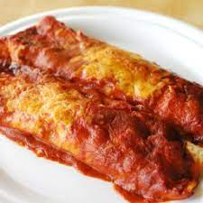

Enchiladas

Description
Enchiladas rojas are one of the most delicious Mexican dishes you can try, and they are one of the easiest to make, too!
Keep in mind that the following are Mexican measurements. No, I don't mean the metric system.
Ingredients
- Chile ancho
- Chile guajillo
- Garlic
- Onion
- Salt
- Oregano
- Water
- Corn tortillas
- Cream, queso fresco (Mexican cheese?), lettuce, tomatoes, maybe salsa verde
Steps
- Choose the same amount of chile ancho and achile guajillo (by size, not by number). The amount of peppers you use will depend on the amount of sauce you want to make.
- Lightly roast the peppers. Don't let them burn.
- Put them in some water and heat them until they become soft.
- Take the peppers out of the water, but don't discard the water.
- Open the peppers and get rid of the seeds.
- Put the peppers, some garlic, a small piece of onion, some oregano, and a little bit of salt in a blender.
- Blend until no solid pieces of anything are left.
- Heat some oil up.
- Put the tortillas in the sauce until they are completely covered. Assume I told you to put the sauce in a larger container.
- Take them out, get rid of any excess sauce and put the tortillas in the hot oil.
- Scream for your life. Leave the kitchen. Call 911.
- Don't leave the tortillas in the oil for too long. Fold them while they are still in the oil.
- Take 'em out and arrange them nicely on your plate.
- Add some lettuce, cream, cheese, onion, tomatoes, and salsa verde. Well done!